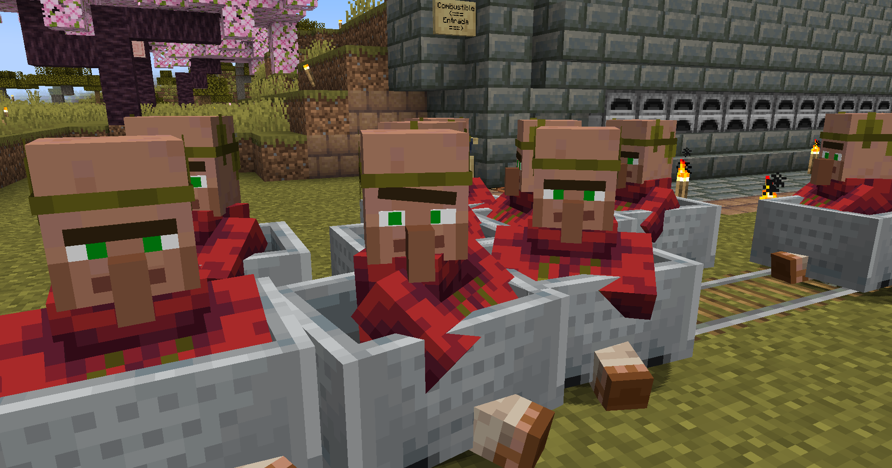
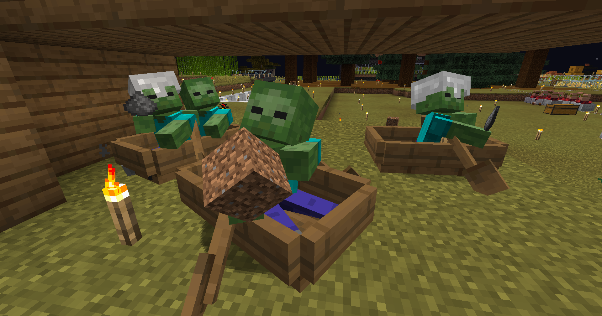
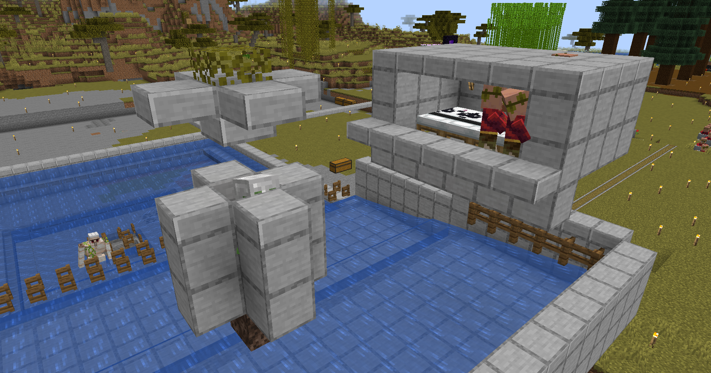
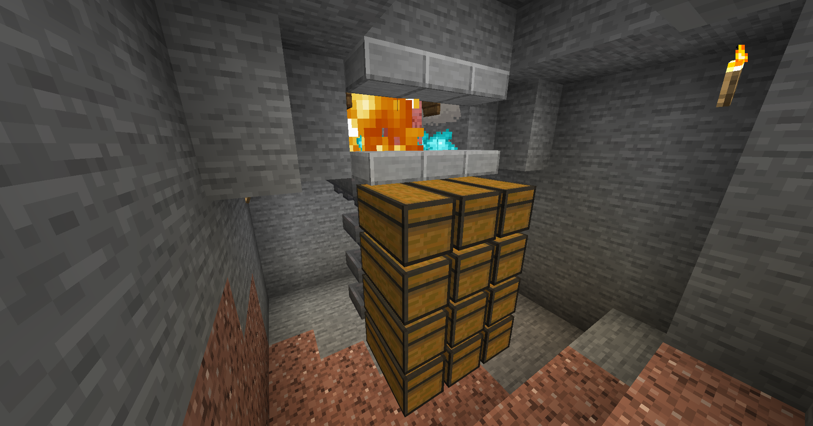
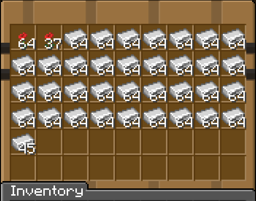

Uno de los minerales más importantes en Minecraft es el hierro, así que para mi mundo necesitaba una buena granja para conseguir grandes cantidades de hierro. Ahora veremos cómo hacer una granja de hierro desde 0.
Para construir esta granja de hierro se necesita una gran cantidad de aldeanos, así que sería bueno tener previamente una granja de aldeanos.
Necesitaremos atrapar al menos 4 zombies para la construcción de la granja. Más adelante explicaré su función.
Cuando los aldeanos se sienten asustados, el juego va a generar un golem de hierro para que los proteja. Así que el golem se generará cerca de ellos, pero este golem caerá en la trampa de lava y fogatas.
Una vez los golems caen en la trampa, caen en la zona de almacenamiento, donde los objetos serán recogidos por las tolvas que están debajo de las fogatas.
Esta granja puede llegar a generar entre 3500 a 4500 lingotes de hierro por hora, lo que la hace una de las mejores granjas de hierro para empezar un mundo en supervivencia. Lo mejor de esta granja es que es modular, o sea, que podremos hacer más módulos hacia arriba para generar aún más hierro.
Si quieres construir esta granja de hierro, puedes hacerlo siguiendo el tutorial de su creador original TheySix.